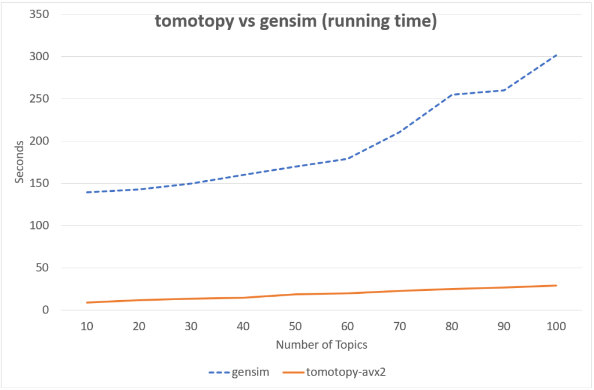

Topic Models
Contents
Topic Models  #
#

Package tomotopy [Lee, 2022]
What is tomotopy?#
tomotopy is a Python extension of tomoto (Topic Modeling Tool) which is a Gibbs-sampling based topic model library written in C++.
The current version of tomoto supports several major topic models including
Latent Dirichlet Allocation (
tomotopy.LDAModel)Labeled LDA (
tomotopy.LLDAModel)Partially Labeled LDA (
tomotopy.PLDAModel)Supervised LDA (
tomotopy.SLDAModel)Dirichlet Multinomial Regression (
tomotopy.DMRModel)Generalized Dirichlet Multinomial Regression (
tomotopy.GDMRModel)Hierarchical Dirichlet Process (
tomotopy.HDPModel)Hierarchical LDA (
tomotopy.HLDAModel)Multi Grain LDA (
tomotopy.MGLDAModel)Pachinko Allocation (
tomotopy.PAModel)Hierarchical PA (
tomotopy.HPAModel)Correlated Topic Model (
tomotopy.CTModel)Dynamic Topic Model (
tomotopy.DTModel)Pseudo-document based Topic Model (
tomotopy.PTModel).
Getting Started#
You can install tomotopy easily using pip. (https://pypi.org/project/tomotopy/)
pip install --upgrade pip
pip install tomotopy
The supported OS and Python versions are:
Linux (x86-64) with Python >= 3.6
macOS >= 10.13 with Python >= 3.6
Windows 7 or later (x86, x86-64) with Python >= 3.6
Other OS with Python >= 3.6: Compilation from source code required (with c++14 compatible compiler)
After installing, you can start tomotopy by just importing.
import tomotopy as tp
print(tp.isa) # prints 'avx2', 'avx', 'sse2' or 'none'
Currently, tomotopy can exploits AVX2, AVX or SSE2 SIMD instruction set for maximizing performance.
When the package is imported, it will check available instruction sets and select the best option.
If tp.isa tells none, iterations of training may take a long time.
But, since most of modern Intel or AMD CPUs provide SIMD instruction set, the SIMD acceleration could show a big improvement.
Here is a sample code for simple LDA training of texts from ‘sample.txt’ file.
import tomotopy as tp
mdl = tp.LDAModel(k=20)
for line in open('sample.txt'):
mdl.add_doc(line.strip().split())
for i in range(0, 100, 10):
mdl.train(10)
print('Iteration: {}\tLog-likelihood: {}'.format(i, mdl.ll_per_word))
for k in range(mdl.k):
print('Top 10 words of topic #{}'.format(k))
print(mdl.get_topic_words(k, top_n=10))
mdl.summary()
Performance of tomotopy#
tomotopy uses Collapsed Gibbs-Sampling(CGS) to infer the distribution of topics and the distribution of words.
Generally CGS converges more slowly than Variational Bayes(VB) that gensim's LdaModel uses, but its iteration can be computed much faster.
In addition, tomotopy can take advantage of multicore CPUs with a SIMD instruction set, which can result in faster iterations.
Following chart shows the comparison of LDA model’s running time between tomotopy and gensim.
The input data consists of 1000 random documents from English Wikipedia with 1,506,966 words (about 10.1 MB).
tomotopy trains 200 iterations and gensim trains 10 iterations.

Model Save and Load#
tomotopy provides save and load method for each topic model class,
so you can save the model into the file whenever you want, and re-load it from the file.
import tomotopy as tp
mdl = tp.HDPModel()
for line in open('sample.txt'):
mdl.add_doc(line.strip().split())
for i in range(0, 100, 10):
mdl.train(10)
print('Iteration: {}\tLog-likelihood: {}'.format(i, mdl.ll_per_word))
# save into file
mdl.save('sample_hdp_model.bin')
# load from file
mdl = tp.HDPModel.load('sample_hdp_model.bin')
for k in range(mdl.k):
if not mdl.is_live_topic(k): continue
print('Top 10 words of topic #{}'.format(k))
print(mdl.get_topic_words(k, top_n=10))
# the saved model is HDP model,
# so when you load it by LDA model, it will raise an exception
mdl = tp.LDAModel.load('sample_hdp_model.bin')
When you load the model from a file, a model type in the file should match the class of methods.
Documents in the Model and out of the Model#
We can use Topic Model for two major purposes. The basic one is to discover topics from a set of documents as a result of trained model, and the more advanced one is to infer topic distributions for unseen documents by using trained model.
We named the document in the former purpose (used for model training) as document in the model, and the document in the later purpose (unseen document during training) as document out of the model.
In tomotopy, these two different kinds of document are generated differently.
A document in the model can be created by tomotopy.LDAModel.add_doc method.
add_doc can be called before tomotopy.LDAModel.train starts.
In other words, after train called, add_doc cannot add a document into the model because the set of document used for training has become fixed.
To acquire the instance of the created document, you should use tomotopy.LDAModel.docs like:
mdl = tp.LDAModel(k=20)
idx = mdl.add_doc(words)
if idx < 0: raise RuntimeError("Failed to add doc")
doc_inst = mdl.docs[idx]
# doc_inst is an instance of the added document
A document out of the model is generated by tomotopy.LDAModel.make_doc method. make_doc can be called only after train starts.
If you use make_doc before the set of document used for training has become fixed, you may get wrong results.
Since make_doc returns the instance directly, you can use its return value for other manipulations.
mdl = tp.LDAModel(k=20)
# add_doc ...
mdl.train(100)
doc_inst = mdl.make_doc(unseen_doc) # doc_inst is an instance of the unseen document
Inference for Unseen Documents#
If a new document is created by tomotopy.LDAModel.make_doc, its topic distribution can be inferred by the model.
Inference for unseen document should be performed using tomotopy.LDAModel.infer method.
mdl = tp.LDAModel(k=20)
# add_doc ...
mdl.train(100)
doc_inst = mdl.make_doc(unseen_doc)
topic_dist, ll = mdl.infer(doc_inst)
print("Topic Distribution for Unseen Docs: ", topic_dist)
print("Log-likelihood of inference: ", ll)
The infer method can infer only one instance of tomotopy.Document or a list of instances of tomotopy.Document.
See more at tomotopy.LDAModel.infer.
Corpus and transform#
Every topic model in tomotopy has its own internal document type.
A document can be created and added into suitable for each model through each model’s add_doc method.
However, trying to add the same list of documents to different models becomes quite inconvenient,
because add_doc should be called for the same list of documents to each different model.
Thus, tomotopy provides tomotopy.utils.Corpus class that holds a list of documents.
tomotopy.utils.Corpus can be inserted into any model by passing as argument corpus to __init__ or add_corpus method of each model.
So, inserting tomotopy.utils.Corpus just has the same effect to inserting documents the corpus holds.
Some topic models requires different data for its documents.
For example, tomotopy.DMRModel requires argument metadata in str type,
but tomotopy.PLDAModel requires argument labels in List[str] type.
Since tomotopy.utils.Corpus holds an independent set of documents rather than being tied to a specific topic model,
data types required by a topic model may be inconsistent when a corpus is added into that topic model.
In this case, miscellaneous data can be transformed to be fitted target topic model using argument transform.
See more details in the following code:
from tomotopy import DMRModel
from tomotopy.utils import Corpus
corpus = Corpus()
corpus.add_doc("a b c d e".split(), a_data=1)
corpus.add_doc("e f g h i".split(), a_data=2)
corpus.add_doc("i j k l m".split(), a_data=3)
model = DMRModel(k=10)
model.add_corpus(corpus)
# You lose `a_data` field in `corpus`,
# and `metadata` that `DMRModel` requires is filled with the default value, empty str.
assert model.docs[0].metadata == ''
assert model.docs[1].metadata == ''
assert model.docs[2].metadata == ''
def transform_a_data_to_metadata(misc: dict):
return {'metadata': str(misc['a_data'])}
# this function transforms `a_data` to `metadata`
model = DMRModel(k=10)
model.add_corpus(corpus, transform=transform_a_data_to_metadata)
# Now docs in `model` has non-default `metadata`, that generated from `a_data` field.
assert model.docs[0].metadata == '1'
assert model.docs[1].metadata == '2'
assert model.docs[2].metadata == '3'
Parallel Sampling Algorithms#
Since version 0.5.0, tomotopy allows you to choose a parallelism algorithm.
The algorithm provided in versions prior to 0.4.2 is COPY_MERGE, which is provided for all topic models.
The new algorithm PARTITION, available since 0.5.0, makes training generally faster and more memory-efficient, but it is available at not all topic models.
The following chart shows the speed difference between the two algorithms based on the number of topics.

Pining Topics using Word Priors#
Since version 0.6.0, a new method tomotopy.LDAModel.set_word_prior has been added. It allows you to control word prior for each topic.
For example, we can set the weight of the word ‘church’ to 1.0 in topic 0, and the weight to 0.1 in the rest of the topics by following codes.
This means that the probability that the word ‘church’ is assigned to topic 0 is 10 times higher than the probability of being assigned to another topic.
Therefore, most of ‘church’ is assigned to topic 0, so topic 0 contains many words related to ‘church’.
This allows to manipulate some topics to be placed at a specific topic number.
import tomotopy as tp
mdl = tp.LDAModel(k=20)
# add documents into `mdl`
# setting word prior
mdl.set_word_prior('church', [1.0 if k == 0 else 0.1 for k in range(20)])
Examples#
Install or upgrade of ekorpkit#
Note
Install ekorpkit package first.
Set logging level to Warning, if you don’t want to see verbose logging.
If you run this notebook in Colab, set Hardware accelerator to GPU.
!pip install -U –pre ekorpkit[topic]
exit()
from ekorpkit import eKonf
eKonf.setLogger("WARNING")
print("version:", eKonf.__version__)
print("is notebook?", eKonf.is_notebook())
print("is colab?", eKonf.is_colab())
print("environment variables:")
eKonf.print(eKonf.env().dict())
data_dir = "../data/topic_models"
version: 0.1.39+5.g6b58da9
is notebook? True
is colab? False
environment variables:
{'CUDA_DEVICE_ORDER': None,
'CUDA_VISIBLE_DEVICES': None,
'EKORPKIT_CONFIG_DIR': '/workspace/projects/ekorpkit-book/config',
'EKORPKIT_DATA_DIR': None,
'EKORPKIT_LOG_LEVEL': 'WARNING',
'EKORPKIT_PROJECT': 'ekorpkit-book',
'EKORPKIT_WORKSPACE_ROOT': '/workspace',
'KMP_DUPLICATE_LIB_OK': 'TRUE',
'NUM_WORKERS': 230}
Load a dataset#
cfg = eKonf.compose('path')
cfg.cache.uri = 'https://github.com/entelecheia/ekorpkit-book/raw/main/assets/data/us_equities_news_sampled.zip'
data = eKonf.load_data("us_equities_news_sampled.parquet", cfg.cached_path)
data.head()
| id | text | split | |
|---|---|---|---|
| 0 | 251155 | Investing com Asian stock markets were broadly... | train |
| 1 | 270611 | Solid execution product diversity and strong b... | train |
| 2 | 237917 | Chip name Micron Technology Inc NASDAQ MU is h... | train |
| 3 | 406989 | June is typically a boring month for gold and ... | train |
| 4 | 231535 | A prudent investment decision involves buying ... | train |
LDA Basics#
LDA class provides Latent Dirichlet Allocation(LDA) topic model and its implementation is based on following papers:
Blei, D.M., Ng, A.Y., &Jordan, M.I. (2003).Latent dirichlet allocation.Journal of machine Learning research, 3(Jan), 993 - 1022.
Newman, D., Asuncion, A., Smyth, P., &Welling, M. (2009).Distributed algorithms for topic models.Journal of Machine Learning Research, 10(Aug), 1801 - 1828.
import tomotopy as tp
save_path = eKonf.join_path(data_dir, "lda_basic.mdl")
mdl = tp.LDAModel(tw=tp.TermWeight.ONE, min_cf=10, rm_top=10, k=20)
for n, line in enumerate(data['text'][:1000]):
ch = line.strip().split()
mdl.add_doc(ch)
mdl.burn_in = 100
mdl.train(0)
print('Num docs:', len(mdl.docs), ', Vocab size:', len(mdl.used_vocabs), ', Num words:', mdl.num_words)
print('Removed top words:', mdl.removed_top_words)
for i in range(0, 1000, 100):
mdl.train(100)
print('Iteration: {}\tLog-likelihood: {}'.format(i, mdl.ll_per_word))
mdl.summary()
mdl.save(save_path, full=True)
Num docs: 1000 , Vocab size: 11716 , Num words: 468615
Removed top words: ['the', 'to', 'of', 'and', 'in']
Iteration: 0 Log-likelihood: -8.149834490154362
Iteration: 100 Log-likelihood: -8.08736953477213
Iteration: 200 Log-likelihood: -8.051370628337063
Iteration: 300 Log-likelihood: -8.025257625400224
for k in range(mdl.k):
print('Topic #{}'.format(k))
for word, prob in mdl.get_topic_words(k):
print('\t', word, prob, sep='\t')
Topic #0
earnings 0.03124929964542389
a 0.028039269149303436
Zacks 0.02219722606241703
is 0.020621005445718765
quarter 0.018191618844866753
for 0.017067573964595795
Earnings 0.015026379376649857
ESP 0.014128423295915127
an 0.013452290557324886
that 0.012859341688454151
Topic #1
a 0.026198897510766983
said 0.025242939591407776
s 0.019541189074516296
its 0.015248588286340237
for 0.011897781863808632
on 0.011563551612198353
it 0.010953155346214771
percent 0.00960773415863514
as 0.008685766719281673
company 0.008452088572084904
Topic #2
a 0.030532576143741608
is 0.016013480722904205
The 0.015097678638994694
on 0.012399696744978428
for 0.011318178847432137
at 0.010512854903936386
it 0.008428314700722694
day 0.007102582603693008
Tesla 0.007090953178703785
stock 0.006995012052357197
Topic #3
a 0.01793372444808483
is 0.016452036798000336
for 0.012529638595879078
its 0.012028549797832966
s 0.011740843765437603
with 0.010846556164324284
technology 0.009976244531571865
NASDAQ 0.009379253722727299
will 0.009110728278756142
The 0.008410641923546791
Topic #4
S 0.019718732684850693
on 0.019661812111735344
a 0.01943672075867653
0 0.017082324251532555
1 0.016551939770579338
percent 0.014398054219782352
s 0.013101842254400253
The 0.012660715728998184
U 0.01251065544784069
after 0.010465435683727264
Topic #5
a 0.028191950172185898
for 0.021664651110768318
is 0.014714432880282402
with 0.011219375766813755
options 0.010716661810874939
his 0.008673887699842453
that 0.008546214550733566
volatility 0.007253522053360939
on 0.007054032292217016
as 0.006343849468976259
Topic #6
0 0.03876658156514168
at 0.02934960648417473
or 0.02234751358628273
1 0.021844562143087387
was 0.01921565644443035
which 0.015937551856040955
NASDAQ 0.014646284282207489
The 0.01412549801170826
on 0.014075559563934803
Inc 0.013850836083292961
Topic #7
a 0.026682842522859573
said 0.01741178147494793
on 0.015312546864151955
that 0.013975335285067558
s 0.012738214805722237
The 0.011103400960564613
for 0.010098491795361042
was 0.00858111772686243
by 0.008440990000963211
U 0.008267499506473541
Topic #8
year 0.03777458146214485
quarter 0.02896769717335701
million 0.028481706976890564
1 0.01698167622089386
from 0.015365163795650005
2 0.012678230181336403
billion 0.012417101301252842
a 0.012012973427772522
3 0.011970488354563713
over 0.011747700162231922
Topic #9
is 0.026326481252908707
or 0.02442336454987526
a 0.022607386112213135
Zacks 0.020143095403909683
for 0.015291192568838596
stocks 0.014799728989601135
that 0.013360192067921162
are 0.012704906985163689
investment 0.011826545000076294
Research 0.010195302776992321
Topic #10
a 0.026791885495185852
that 0.023886676877737045
is 0.020946161821484566
it 0.012942749075591564
for 0.011327537707984447
we 0.011231127195060253
s 0.011211437173187733
are 0.011083795689046383
I 0.010176045820116997
be 0.009823672473430634
Topic #11
a 0.020864764228463173
for 0.020766371861100197
with 0.015346375294029713
is 0.013524716719985008
s 0.011478163301944733
The 0.010997447185218334
from 0.007882636971771717
on 0.007497502025216818
that 0.006727233063429594
Boeing 0.006626029498875141
Topic #12
Apple 0.02030530944466591
a 0.01906707137823105
s 0.017792053520679474
NASDAQ 0.015772251412272453
its 0.01572321355342865
is 0.013062838464975357
for 0.012008496560156345
on 0.01025841198861599
company 0.009939656592905521
The 0.009550408460199833
Topic #13
s 0.021421290934085846
sales 0.01631803810596466
its 0.01597566343843937
a 0.015387967228889465
company 0.014013081789016724
on 0.0105489082634449
is 0.010017824359238148
has 0.0078099193051457405
for 0.007408237084746361
The 0.0072761401534080505
Topic #14
a 0.023136673495173454
is 0.012710190378129482
The 0.012222971767187119
dividend 0.010886242613196373
has 0.010031736455857754
fund 0.008607557974755764
as 0.008360200561583042
with 0.008185301907360554
its 0.007902964949607849
ETF 0.007413247134536505
Topic #15
a 0.0332772321999073
is 0.022882360965013504
has 0.016356931999325752
for 0.01582656055688858
stock 0.015669718384742737
this 0.012685603462159634
that 0.012254289351403713
s 0.012019027024507523
Zacks 0.011170845478773117
earnings 0.010324726812541485
Topic #16
Zacks 0.022936400026082993
a 0.020220259204506874
has 0.016317356377840042
company 0.016230208799242973
s 0.013876333832740784
The 0.013500397093594074
for 0.01269469689577818
Rank 0.01241616252809763
is 0.010008460842072964
growth 0.009430031292140484
Topic #17
oil 0.019801318645477295
a 0.018382295966148376
is 0.01412523165345192
for 0.012624233961105347
The 0.011699890717864037
production 0.010812296532094479
gas 0.010303483344614506
Energy 0.010145186446607113
energy 0.008825100027024746
from 0.008525466546416283
Topic #18
a 0.019231945276260376
China 0.018903110176324844
S 0.015108540654182434
U 0.013544078916311264
for 0.011517252773046494
s 0.01038326695561409
is 0.009811291471123695
on 0.00963989831507206
as 0.00934892799705267
The 0.008886564522981644
Topic #19
a 0.02060071751475334
The 0.01461031660437584
is 0.01301425788551569
for 0.011943803168833256
on 0.011200555600225925
s 0.010091605596244335
as 0.009640030562877655
1 0.009573404677212238
at 0.008796103298664093
that 0.008279383182525635
LDA Visualization#
This example shows how to perform a Latent Dirichlet Allocation using tomotopy and visualize the result.
import tomotopy as tp
import nltk
import re
import numpy as np
import pyLDAvis
from nltk.corpus import stopwords
porter_stemmer = nltk.PorterStemmer().stem
english_stops = set(porter_stemmer(w) for w in stopwords.words('english'))
pat = re.compile('^[a-z]{2,}$')
corpus = tp.utils.Corpus(
tokenizer=tp.utils.SimpleTokenizer(porter_stemmer),
stopwords=lambda x: x in english_stops or not pat.match(x)
)
corpus.process(d.lower() for d in data['text'])
# save preprocessed corpus for reuse
save_path = eKonf.join_path(data_dir, "preprocessed_corpus.cps")
corpus.save(save_path)
mdl = tp.LDAModel(min_df=5, rm_top=40, k=30, corpus=corpus)
mdl.train(0)
print('Num docs:{}, Num Vocabs:{}, Total Words:{}'.format(
len(mdl.docs), len(mdl.used_vocabs), mdl.num_words
))
print('Removed Top words: ', *mdl.removed_top_words)
Num docs:22098, Num Vocabs:20231, Total Words:5861553
Removed Top words: year compani stock earn zack quarter market share expect million report said nyse estim growth price billion rank also trade nasdaq revenu invest investor new inc last rate industri like sale buy per increas month time current one consensu percent
# Let's train the model
for i in range(0, 1000, 100):
print('Iteration: {:04}, LL per word: {:.4}'.format(i, mdl.ll_per_word))
mdl.train(100)
print('Iteration: {:04}, LL per word: {:.4}'.format(1000, mdl.ll_per_word))
mdl.summary()
Iteration: 0000, LL per word: -11.76
Iteration: 0020, LL per word: -8.53
Iteration: 0040, LL per word: -8.273
Iteration: 0060, LL per word: -8.196
Iteration: 0080, LL per word: -8.154
Iteration: 0100, LL per word: -8.133
Iteration: 0120, LL per word: -8.117
Iteration: 0140, LL per word: -8.105
Iteration: 0160, LL per word: -8.097
Iteration: 0180, LL per word: -8.091
Iteration: 0200, LL per word: -8.084
Iteration: 0220, LL per word: -8.079
Iteration: 0240, LL per word: -8.075
Iteration: 0260, LL per word: -8.074
Iteration: 0280, LL per word: -8.071
Iteration: 0300, LL per word: -8.067
Iteration: 0320, LL per word: -8.066
Iteration: 0340, LL per word: -8.061
Iteration: 0360, LL per word: -8.06
Iteration: 0380, LL per word: -8.059
Iteration: 0400, LL per word: -8.055
Iteration: 0420, LL per word: -8.054
Iteration: 0440, LL per word: -8.053
Iteration: 0460, LL per word: -8.053
Iteration: 0480, LL per word: -8.052
Iteration: 0500, LL per word: -8.051
Iteration: 0520, LL per word: -8.049
Iteration: 0540, LL per word: -8.049
Iteration: 0560, LL per word: -8.048
Iteration: 0580, LL per word: -8.048
Iteration: 0600, LL per word: -8.05
Iteration: 0620, LL per word: -8.046
Iteration: 0640, LL per word: -8.048
Iteration: 0660, LL per word: -8.048
Iteration: 0680, LL per word: -8.046
Iteration: 0700, LL per word: -8.048
Iteration: 0720, LL per word: -8.048
Iteration: 0740, LL per word: -8.048
Iteration: 0760, LL per word: -8.047
Iteration: 0780, LL per word: -8.047
Iteration: 0800, LL per word: -8.048
Iteration: 0820, LL per word: -8.047
Iteration: 0840, LL per word: -8.048
Iteration: 0860, LL per word: -8.047
Iteration: 0880, LL per word: -8.047
Iteration: 0900, LL per word: -8.048
Iteration: 0920, LL per word: -8.047
Iteration: 0940, LL per word: -8.047
Iteration: 0960, LL per word: -8.045
Iteration: 0980, LL per word: -8.046
Iteration: 1000, LL per word: -8.046
<Basic Info>
| LDAModel (current version: 0.12.3)
| 22098 docs, 5861553 words
| Total Vocabs: 71297, Used Vocabs: 20231
| Entropy of words: 7.90829
| Entropy of term-weighted words: 7.90829
| Removed Vocabs: year compani stock earn zack quarter market share expect million report said nyse estim growth price billion rank also trade nasdaq revenu invest investor new inc last rate industri like sale buy per increas month time current one consensu percent
|
<Training Info>
| Iterations: 1000, Burn-in steps: 0
| Optimization Interval: 10
| Log-likelihood per word: -8.04616
|
<Initial Parameters>
| tw: TermWeight.ONE
| min_cf: 0 (minimum collection frequency of words)
| min_df: 5 (minimum document frequency of words)
| rm_top: 40 (the number of top words to be removed)
| k: 30 (the number of topics between 1 ~ 32767)
| alpha: [0.1] (hyperparameter of Dirichlet distribution for document-topic, given as a single `float` in case of symmetric prior and as a list with length `k` of `float` in case of asymmetric prior.)
| eta: 0.01 (hyperparameter of Dirichlet distribution for topic-word)
| seed: 1845346494 (random seed)
| trained in version 0.12.3
|
<Parameters>
| alpha (Dirichlet prior on the per-document topic distributions)
| [0.0305041 0.03837155 0.03806888 0.15033804 0.03779588 0.02238496
| 0.04674659 0.09717994 0.06488691 0.06417299 0.02571286 0.06602185
| 0.06956474 0.02840271 0.03985003 0.07475647 0.06216731 0.08010441
| 0.21915881 0.03911861 0.01526014 0.02923114 0.11285637 0.10376224
| 0.052956 0.092475 0.03947552 0.04790112 0.02535166 0.04443888]
| eta (Dirichlet prior on the per-topic word distribution)
| 0.01
|
<Topics>
| #0 (106794) : ep revis beat surpris esp
| #1 (104946) : game point first two season
| #2 (135861) : oil energi ga product barrel
| #3 (468133) : gain strong term past posit
| #4 (93291) : product food brand consum may
| #5 (124404) : gold mine metal silver properti
| #6 (137225) : dividend yield cash insur ratio
| #7 (269291) : appl technolog servic googl data
| #8 (149044) : bank financi loan credit goldman
| #9 (157560) : china chines tariff countri global
| #10 (78979) : boe air aircraft defens jet
| #11 (201906) : court reuter investig case use
| #12 (259548) : index gain futur dow fell
| #13 (107755) : fund etf sector asset index
| #14 (97522) : energi airlin power solar electr
| #15 (239181) : trump presid would tax state
| #16 (147627) : retail store amazon brand onlin
| #17 (400553) : fed economi econom data bank
| #18 (666510) : get go even look make
| #19 (143296) : valu score ratio look past
| #20 (67007) : point close rose fell perform
| #21 (149661) : drug patient treatment studi approv
| #22 (273527) : deal reuter would busi execut
| #23 (238765) : analyst profit reuter forecast fell
| #24 (195379) : day week move chart higher
| #25 (320151) : oper cent adjust ago net
| #26 (93764) : health medic healthcar care system
| #27 (163422) : esp surpris beat result posit
| #28 (149443) : research secur inform recommend may
| #29 (121008) : car vehicl tesla motor gm
|
topic_term_dists = np.stack([mdl.get_topic_word_dist(k) for k in range(mdl.k)])
doc_topic_dists = np.stack([doc.get_topic_dist() for doc in mdl.docs])
doc_topic_dists /= doc_topic_dists.sum(axis=1, keepdims=True)
doc_lengths = np.array([len(doc.words) for doc in mdl.docs])
vocab = list(mdl.used_vocabs)
term_frequency = mdl.used_vocab_freq
prepared_data = pyLDAvis.prepare(
topic_term_dists,
doc_topic_dists,
doc_lengths,
vocab,
term_frequency,
start_index=0, # tomotopy starts topic ids with 0, pyLDAvis with 1
sort_topics=False # IMPORTANT: otherwise the topic_ids between pyLDAvis and tomotopy are not matching!
)
/opt/conda/lib/python3.8/site-packages/past/builtins/misc.py:45: DeprecationWarning: the imp module is deprecated in favour of importlib; see the module's documentation for alternative uses
from imp import reload
pyLDAvis.display(prepared_data)
save_path = eKonf.join_path(data_dir, "lda_basic.html")
pyLDAvis.save_html(prepared_data, save_path)
from IPython.display import display, HTML
display(HTML(f"<a href={save_path} target='_blank'>show results</a>"))